Sociology has often assumed that humans are central to society. Working within posthumanism and Actor-Network Theory, I neither privilege nor efface the human; instead, I trace society as an effect of heterogeneous associations.
Perspectives
Sociology
Seeing society as assembled from relations.

Posthumanism
Treating human and nonhuman actors symmetrically.
Actor-Network Theory
Following actors to trace how associations assemble the social.
Interdisciplinarity
Connecting theory, fieldwork, and computation across domains.